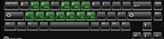

Guess the musical note
To start, click next
Points: 0
Errors: 0
0%
Clef:
Treble Clef
Bass Clef
Alto Clef
Minimum MIDI note:
30
Maximum MIDI note:
100
Show score/music sheet
Plays sound
Shortcuts
Musical notes

Others:
Right arrow key : next question
R key: Repeats the sound of last note